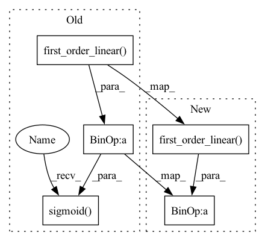

Pattern ID :11857

Before Change
def forward(self, interaction):
ffm_input = self.get_ffm_input(interaction)
ffm_output = torch.sum(torch.sum(self.ffm(ffm_input), dim=1), dim=1, keepdim=True)
output = self.sigmoid(self.first_order_linear(interaction) + ffm_output)
return output.squeeze(-1)
def calculate_loss(self, interaction):
After Change
def forward(self, interaction):
ffm_input = self.get_ffm_input(interaction)
ffm_output = torch.sum(torch.sum(self.ffm(ffm_input), dim=1), dim=1, keepdim=True)
output = self.first_order_linear(interaction) + ffm_output
return output.squeeze(-1)
In pattern: SUPERPATTERN
Frequency: 5
Non-data size: 5
Instances
Fragment ID: 39918731
Project Name: rucaibox/recbole
Commit Name: a82df5e32aaa81a40d965bedea2db766f858f0ec
Time: 2022-07-05
Author: 1049765241@qq.com
File Name: recbole/model/context_aware_recommender/ffm.py
M Class Name: FFM
N Class Name: FFM
M Method Name: forward(2)
N Method Name: forward(2)
M Parent Class: ContextRecommender
N Parent Class: ContextRecommender
M File Name: recbole/model/context_aware_recommender/ffm.py
N File Name: recbole/model/context_aware_recommender/ffm.py
M Start Line: 118
M End Line: 119
N Start Line: 118
N End Line: 119
'>
Before Change
def forward(self, interaction):
afm_all_embeddings = self.concat_embed_input_fields(interaction) // [batch_size, num_field, embed_dim]
output = self.sigmoid(self.first_order_linear(interaction) + self.afm_layer(afm_all_embeddings))
return output.squeeze(-1)
def calculate_loss(self, interaction):
label = interaction[self.LABEL]
After Change
def forward(self, interaction):
afm_all_embeddings = self.concat_embed_input_fields(interaction) // [batch_size, num_field, embed_dim]
output = self.first_order_linear(interaction) + self.afm_layer(afm_all_embeddings)
return output.squeeze(-1)
def calculate_loss(self, interaction):
'>
Fragment ID: 39918733
Project Name: rucaibox/recbole
Commit Name: a82df5e32aaa81a40d965bedea2db766f858f0ec
Time: 2022-07-05
Author: 1049765241@qq.com
File Name: recbole/model/context_aware_recommender/afm.py
M Class Name: AFM
N Class Name: AFM
M Method Name: forward(2)
N Method Name: forward(2)
M Parent Class: ContextRecommender
N Parent Class: ContextRecommender
M File Name: recbole/model/context_aware_recommender/afm.py
N File Name: recbole/model/context_aware_recommender/afm.py
M Start Line: 104
M End Line: 104
N Start Line: 104
N End Line: 104
'>
Before Change
def forward(self, interaction):
fm_all_embeddings = self.concat_embed_input_fields(interaction) // [batch_size, num_field, embed_dim]
y = self.sigmoid(self.first_order_linear(interaction) + self.fm(fm_all_embeddings))
return y.squeeze(-1)
def calculate_loss(self, interaction):
label = interaction[self.LABEL]
After Change
def forward(self, interaction):
fm_all_embeddings = self.concat_embed_input_fields(interaction) // [batch_size, num_field, embed_dim]
y = self.first_order_linear(interaction) + self.fm(fm_all_embeddings)
return y.squeeze(-1)
def calculate_loss(self, interaction):
'>
Fragment ID: 39918732
Project Name: rucaibox/recbole
Commit Name: a82df5e32aaa81a40d965bedea2db766f858f0ec
Time: 2022-07-05
Author: 1049765241@qq.com
File Name: recbole/model/context_aware_recommender/fm.py
M Class Name: FM
N Class Name: FM
M Method Name: forward(2)
N Method Name: forward(2)
M Parent Class: ContextRecommender
N Parent Class: ContextRecommender
M File Name: recbole/model/context_aware_recommender/fm.py
N File Name: recbole/model/context_aware_recommender/fm.py
M Start Line: 49
M End Line: 49
N Start Line: 49
N End Line: 49
'>
Before Change
def forward(self, interaction):
fwfm_all_embeddings = self.concat_embed_input_fields(interaction) // [batch_size, num_field, embed_dim]
output = self.sigmoid(self.first_order_linear(interaction) + self.fwfm_layer(fwfm_all_embeddings))
return output.squeeze(-1)
def calculate_loss(self, interaction):
After Change
def forward(self, interaction):
fwfm_all_embeddings = self.concat_embed_input_fields(interaction) // [batch_size, num_field, embed_dim]
output = self.first_order_linear(interaction) + self.fwfm_layer(fwfm_all_embeddings)
return output.squeeze(-1)
'>
Fragment ID: 39918735
Project Name: rucaibox/recbole
Commit Name: a82df5e32aaa81a40d965bedea2db766f858f0ec
Time: 2022-07-05
Author: 1049765241@qq.com
File Name: recbole/model/context_aware_recommender/fwfm.py
M Class Name: FwFM
N Class Name: FwFM
M Method Name: forward(2)
N Method Name: forward(2)
M Parent Class: ContextRecommender
N Parent Class: ContextRecommender
M File Name: recbole/model/context_aware_recommender/fwfm.py
N File Name: recbole/model/context_aware_recommender/fwfm.py
M Start Line: 125
M End Line: 125
N Start Line: 125
N End Line: 125
'>
Before Change
// todo: check (batch) or (batch, 1)
x.append(interaction[field].unsqueeze(1))
x = torch.cat(x, dim=1)
y = self.sigmoid(self.first_order_linear(x) + self.afm_layer(self.embedding(x)))
return y.squeeze()
def calculate_loss(self, interaction):
label = interaction[self.LABEL]
After Change
x.append(dense_embedding)
x = torch.cat(x, dim=1) // [batch_size, num_field, embed_dim]
y = self.first_order_linear(interaction) + self.afm_layer(x)
return y.squeeze()
def calculate_loss(self, interaction):
'>
Fragment ID: 39918734
Project Name: rucaibox/recbole
Commit Name: c8ff0206d4f9d04edc6db77eac3bd35040282cfd
Time: 2020-08-15
Author: 893833413@qq.com
File Name: model/context_aware_recommender/afm.py
M Class Name: AFM
N Class Name: AFM
M Method Name: forward(2)
N Method Name: forward(2)
M Parent Class: ContextRecommender
N Parent Class: ContextRecommender
M File Name: model/context_aware_recommender/afm.py
N File Name: model/context_aware_recommender/afm.py
M Start Line: 97
M End Line: 101
N Start Line: 85
N End Line: 93